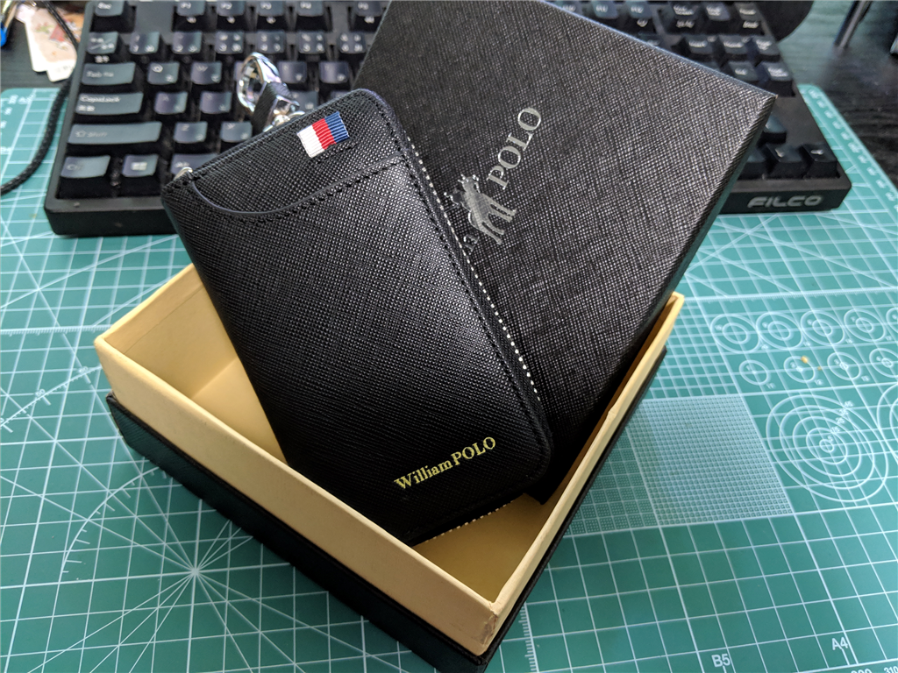
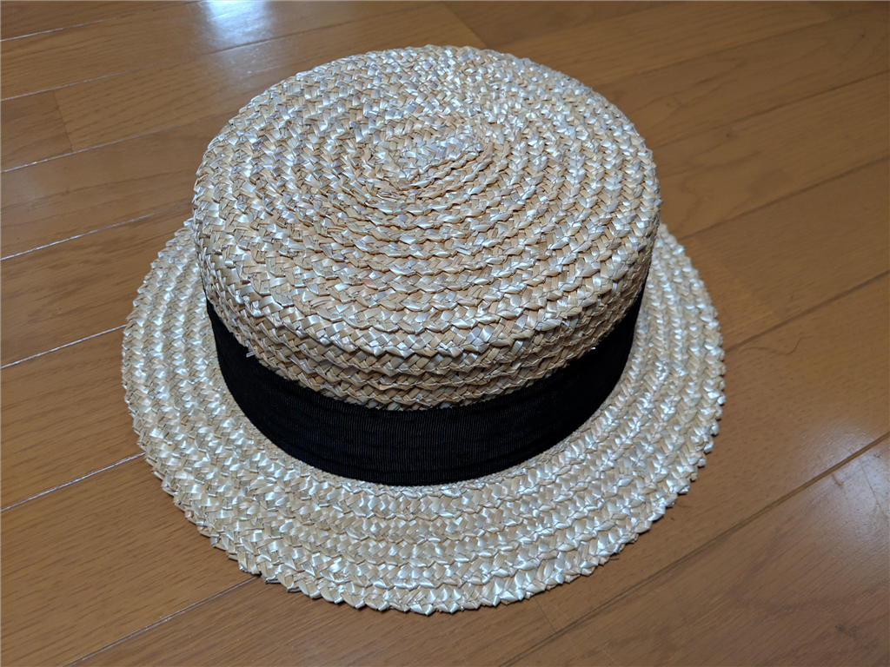
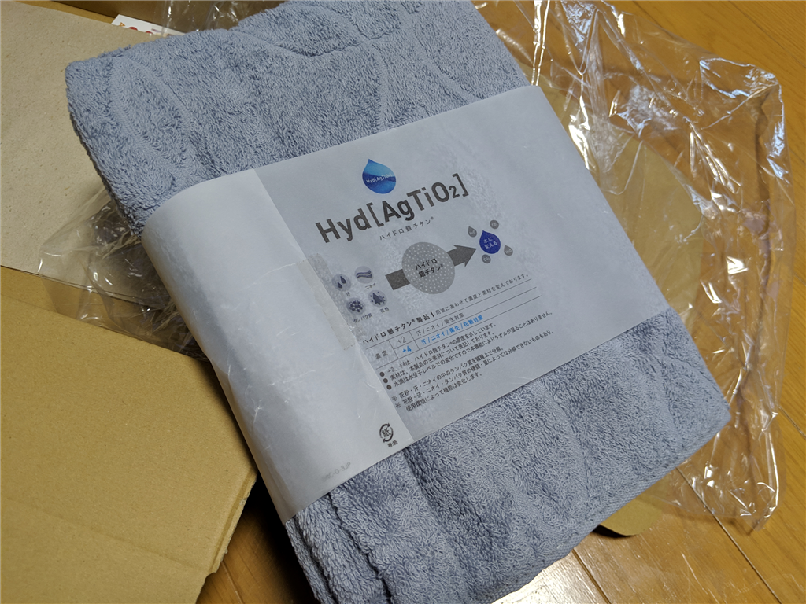

4月20日：39歳になりました
公開日：
何も悪いことしていないのに、もうすぐ40歳になっちゃうよ。
38歳になってやったこと
無職のお仕事の内容がちょっと変わったので、今年は慣熟に徹しようかなぁと思い、あまり新しいことに手を出さないように――と思っていたのですが、プライベートではクルマを買うわ、駐車場を探すついでにマンションを買っちゃうわで、なかなか波乱万丈な一年になりました。モノゴトが動き出すキッカケっていうのはどこにあるかわからないし、一旦動いてしまえば、アクセルとブレーキを踏み間違えたプリウスのように、恐ろしいほど止まらない。今年に入って3カ月で、こうもいろいろ変わるものだと、振り返って我ながら感心してしまいます。
一方で「平成のうちに結婚！」という野望は潰えました。まぁ、まったく努力しなかったわけじゃないよ。地元の結婚支援センターに登録（だけ）してみたり、お見合いを4件ぐらいやったりしました（人生最高記録！）。お相手のなかには「うわぁ、自分なんぞにはもったいないぐらいの別嬪さんだなぁ」なんて方もいましたけど、まぁ、なんとなくうまくいかず。お世話をしていただいたからには、大変申し訳ないことをしました。
今年は……自棄になったわけではないのですが、当面はなにも起こらなさそうだと思ったので、婚活資金を独身貴族の充実（クルマとマンション）に全部つぎ込んでしまいました。貯金どころか、住宅ローン（＋身内からちょっと借り入れ）を背負う身になったので、ちょっと落ち着くまで、当面はなにもしないつもりです。まずは引っ越しを頑張らねば。
39歳になってやりたいこと
引っ越しもするし、生活を改めたいかなぁって思います。まず、部屋はシンプルにする。前回の引っ越しは親父があれをもっていきたい、これを持っていきたいというのを何も言わず許してきました。自殺未遂の件もあり、愛着のあるものを捨てさせるのは酷だろうとも思いまして。おかげで引っ越し代が100万に膨れ上がるわ（おかげで愛媛に引っ越した当初は割と厳しい生活だった）、家にモノが溢れるわで散々だったのですが、まぁ、そろそろいいでしょう。不要とみなしたものはバンバカ捨てて、少し生活をスリムにしたいですね。だいたいさ、なんでホットプレートが家に3台も、4台もあるんだよ、頭おかしいのか？ ――そんなわけで、今、家庭内はちょっとした熱戦・冷戦が発生しているのですが、うまく御していきたいです（← そういう名伯楽なところが、一族の信認につながってるところもあるｗ）。
誕生日プレゼント
今年はクルマを買ったので、自分のためにキーホルダー（キーケース）を買いました。

ちょっと大きめなのですが、大ぶりな Ninja 250 のキーも収めたかったので、個人的には助かりました。GW の旅行中に引っ掛けちゃって、カラビナが取れちゃったのは残念ですが、自分で補修しようと思います。
")

あと、Makuake でカンパしていた田中帽子店の麦わら帽子が届きました。誕生日前日なので、なんかこれもプレゼントっぽくなったｗ 自分は頭が大きいので L サイズを頼んだのですが、ちょっと紐で調節してちょうどいい感じ。固い「鬼麦」という材質でできているそうで、カッチリしているのがいいですね。夏の着物と合わせるのが楽しみ。

それと、妹からタオル製の枕カバーをもらいました。謎物質で謎の安眠効果があるらしい……そういう科学的（？）なところはわかんないし、興味もないのですが、使い心地自体はいい感じ。うちのおかんといい、妹といい、なぜか僕に安眠グッズばかりくれるのですが、よっぽど「眠れないキャラ」感あるんですかね。確かにそういうときもあるけど、それは寝るべき時に眠れないだけで、時間的には毎日8時間以上寝てるんだよ。4時間＋4時間、とか、変な寝方をしてるだけで……あと、目の下のクマが取れないのも、そういう言う印象を深めているかもね。なんとかなればいいけど、まぁ、個人的にはあまり気にしてない。
何はともあれ、今年もよろしくお願いします。あんまり頑張らずに、うまーくモノゴトを回しながら、自分の手の届く範囲がおおむね楽しく、きゃっきゃわいわいできるようにしたいですね。